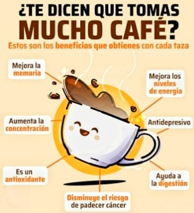
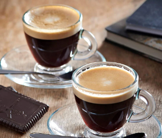
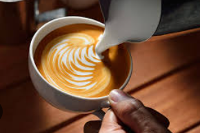

El Cafe: Mas que una Bebida, un Combustible

Para muchos, el dia no empieza hasta que la primera gota de cafeina toca el paladar. El cafe es la segunda bebida mas consumidad en el mundo, solo superada por el agua (H 2O), y es el aliado principal de cualquier estudiante en noche de entregas.
Por que tomarlo sin azucar?
Añadir azúcar oculta el verdadero perfil del grano y el esfuerzo del agricultor. Al tomarlo negro, el paladar se adapta para identificar las notas frutales, la acidez balanceada o los toques achocolatados propios de un buen tueste. Un buen café no necesita azúcar y uno malo no se la merece.
Beneficios en el Estudio
La cafeina actúa bloqueando los receptores de adenosina en el cerebro, retrasando la sensación de fatiga. Esto se traduce en mayor enfoque, reflejos más rápidos y la resistencia mental necesaria para resolver problemas complejos o asegurar una victoria en una partida decisiva. Es ciencia pura al servicio de tu rendimiento.
Es el combustible perfecto para largas noches maquetando interfaces o para mantener los reflejos tácticos al máximo en una partida decisiva. Recuerda: la temperatura de extracción no debe superar los 90 oC.

Sabias Que....?
- El café tarda entre 15 y 45 minutos en alcanzar su máximo efecto en el cerebro.
- Un grano de café tostado contiene más de 800 compuestos aromáticos.
- La dosis diaria recomendada de cafeína es de 400 mg (aprox. 4 tazas).
- El café puede mejorar el rendimiento físico hasta en un 12% si se consume antes del ejercicio.

Tipos Segun Preparacion
Expresso
Base de casi todo. Alta presion, poco volumen, dabor concentrado e intenso.

Cappuccino
Intensidad: Media
Espresso con leche vaporizada y espuma. Equilibrio perfecto entre cafeína y suavidad.

Cold Brew
Intensidad: Alta
Macerado en frío durante 12 horas. Suave, bajo en acidez y potente en cafeína.

Principales Variedades
COMPARATIVA TECNICA DE GRANOS
| Variedad |
Origen Principal |
Perfil de Sabor |
Nivel de Cafeina |
| Arabica |
Etiopia |
Suave, Dulce y Afrutado |
Bajo |
| Robusta |
Africa Subsahariana |
Fuerte, terroso y amargo |
Alto |
| Caturra |
Brasil (mutacion) |
Citrico y ligero |
Medio |
Como Preparar un V60 paso a paso
- Calienta el agua a 88 - 92 °C. Nunca dejes que hierva
- Coloca el filtro en el V60 y enjuágalo con agua caliente para eliminar el sabor a papel.
- Agrega 15 g de café molido medio-fino.
- Vierte 30 ml de agua y espera 30 segundos (bloom o pre-infusión).
- Continúa vertiendo de forma circular lenta hasta completar 250 ml.
- Retira el filtro y disfruta tu taza.
La próxima vez que prepares una taza, recuerda que estás consumiendo el resultado de un proceso químico y artesanal fascinante.Si quieres conocer más sobre las variedades del grano peruano y su impacto mundial, puedes visitar este portal especializado aquí.
Desarrollado por: Sebastian Rabanal Francia
Contacto: sebastianrabanal34@gmail.com